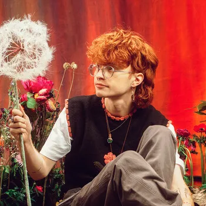
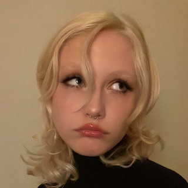
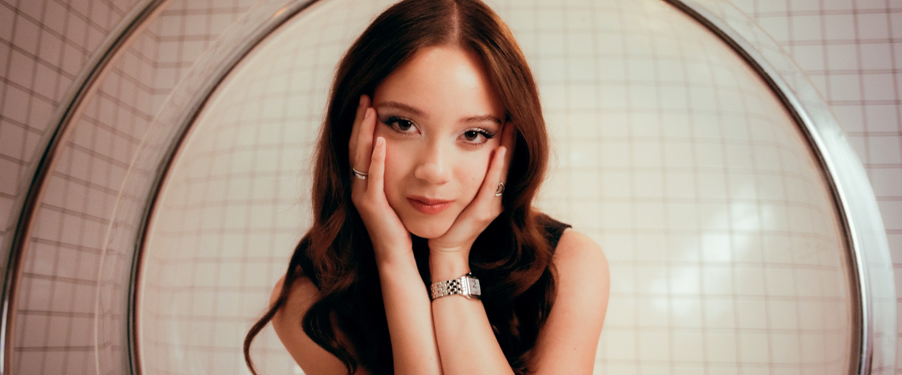
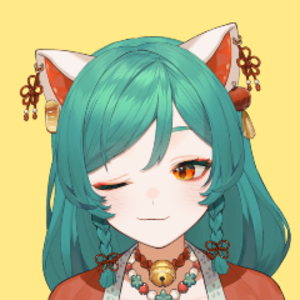
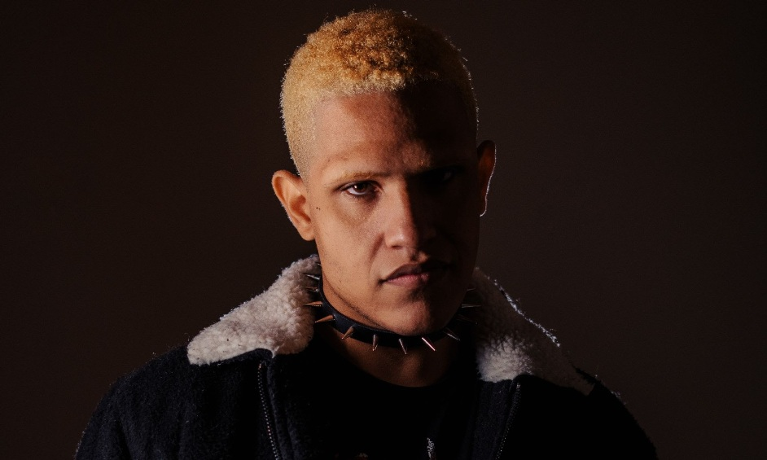

Eu gosto de vários estilos de musica desde funk, forró, e com certeza indie e Rock. Dentre esses, estes são meus artistas favoritos:
 Cavetown e Chloe Moriondo, ambos artistas com foco em musica indie, mas também Seus estilos combinam elementos de rock indie, pop indie e bedroom pop com batidas suaves de ukulele.
Laufey Lín Jónsdóttir, conhecida como Laufey ela destaca músicas inspiradoras em uma ampla variedade de gêneros, além de ser irlandesa

Mitsuki Miyawaki, ou Mitski. Ela é japonesa e tem o estilo como alternativo/indie
Omocat, ele não é um cantor mas eu amo muito a trilha sonora do jogo desenvolvido por ele "omori".
Por fim Kamaitachi, ele é brasileiro nascido no Rio de Janeiro e tem o foco em rock, alternativo e indie.